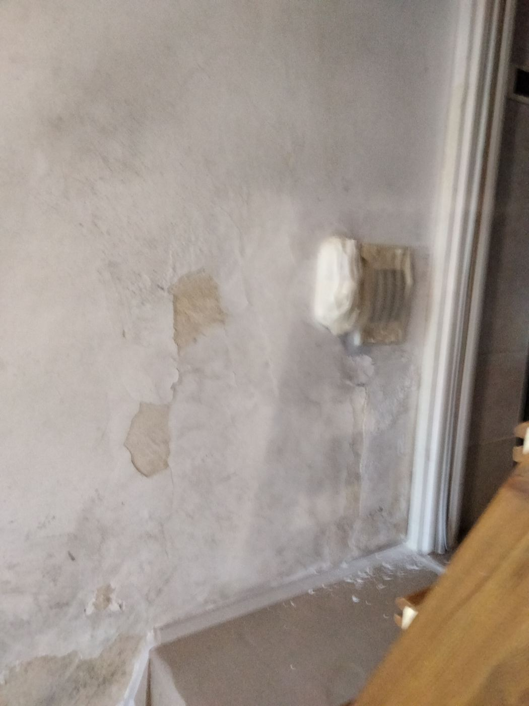
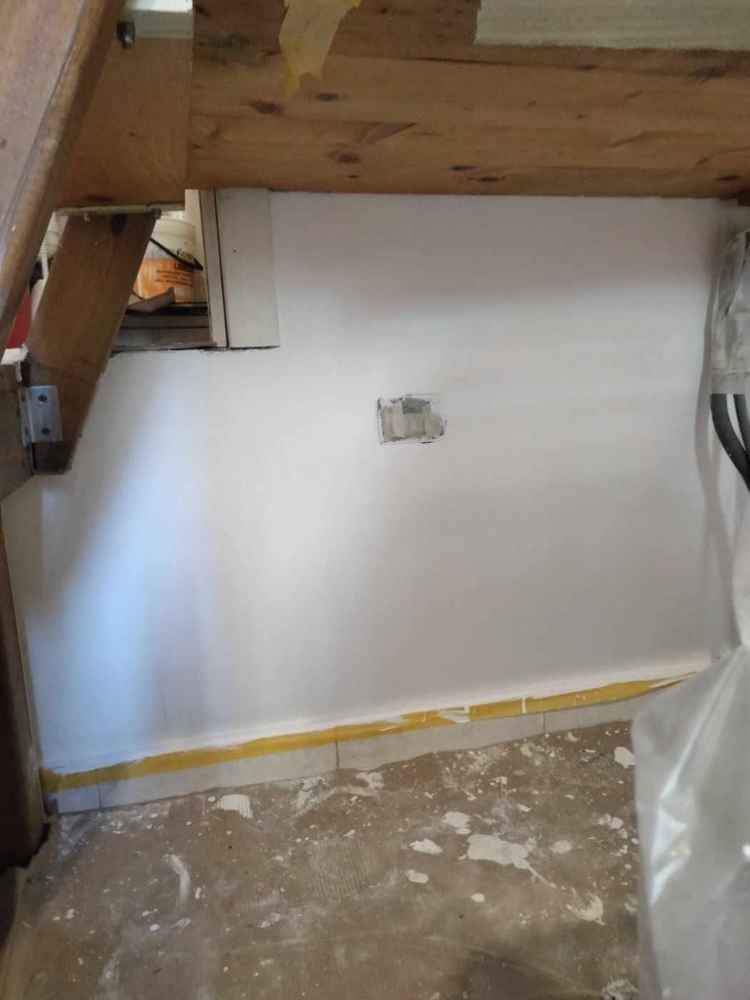
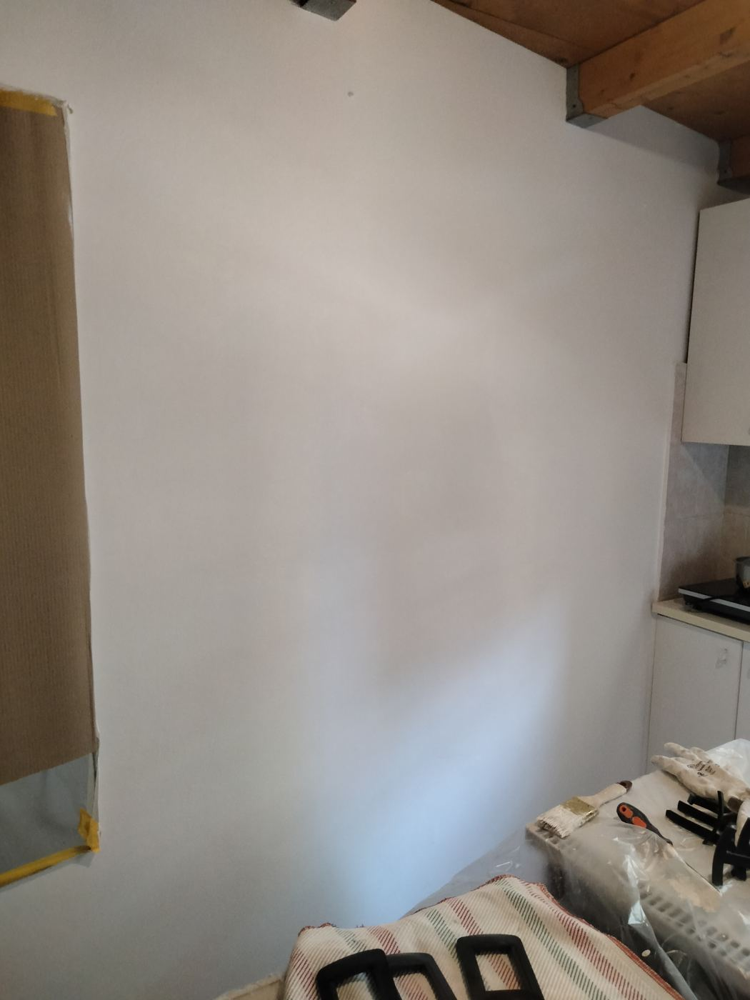
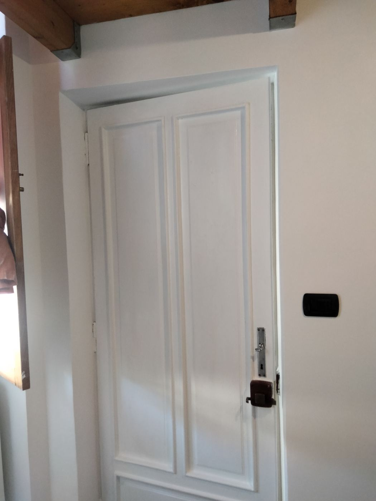
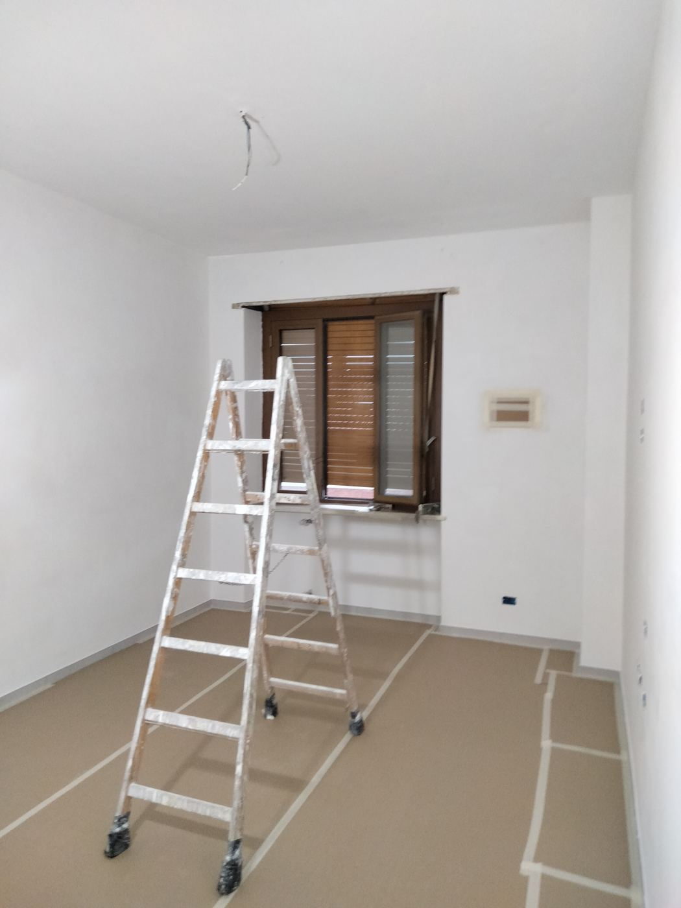
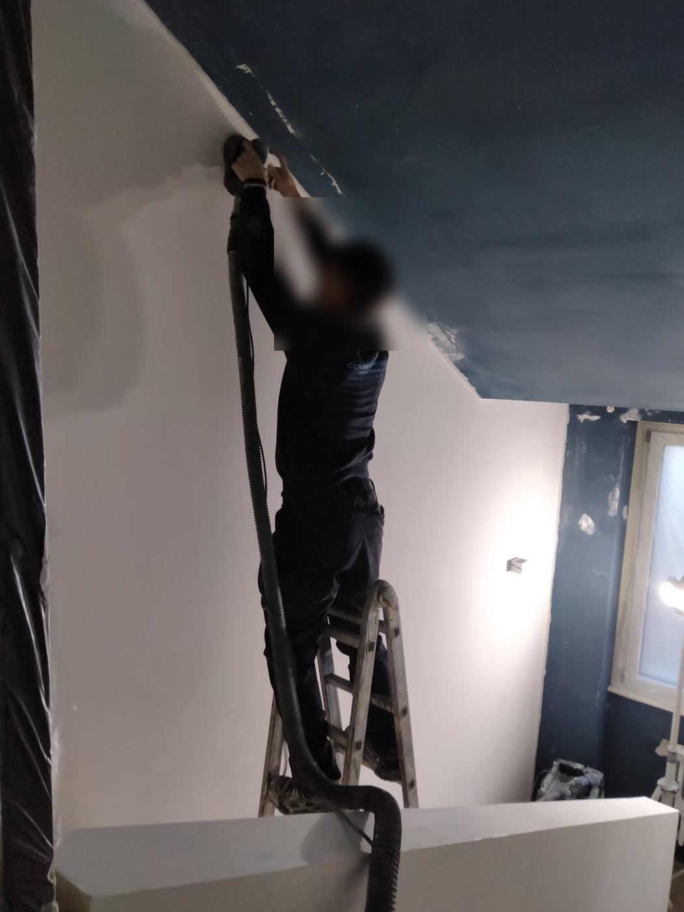
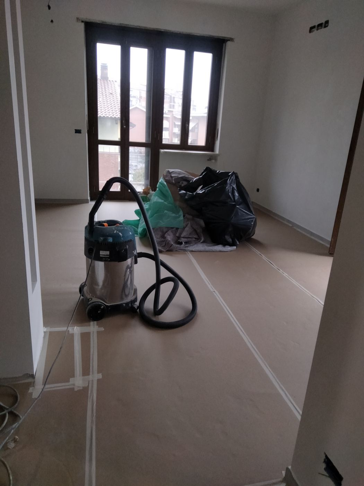
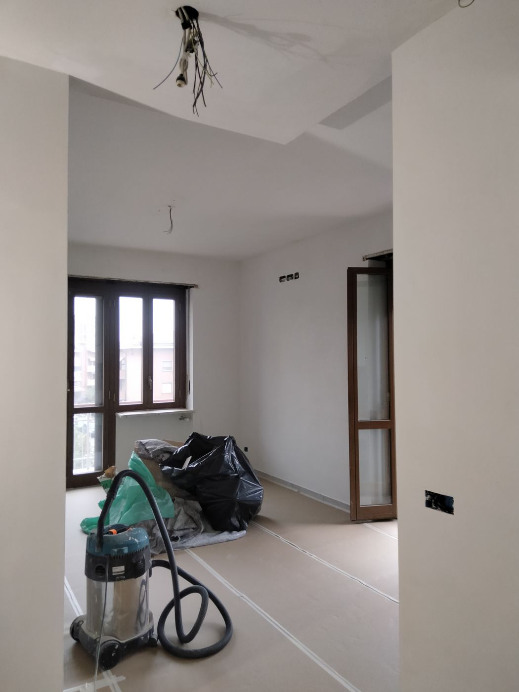
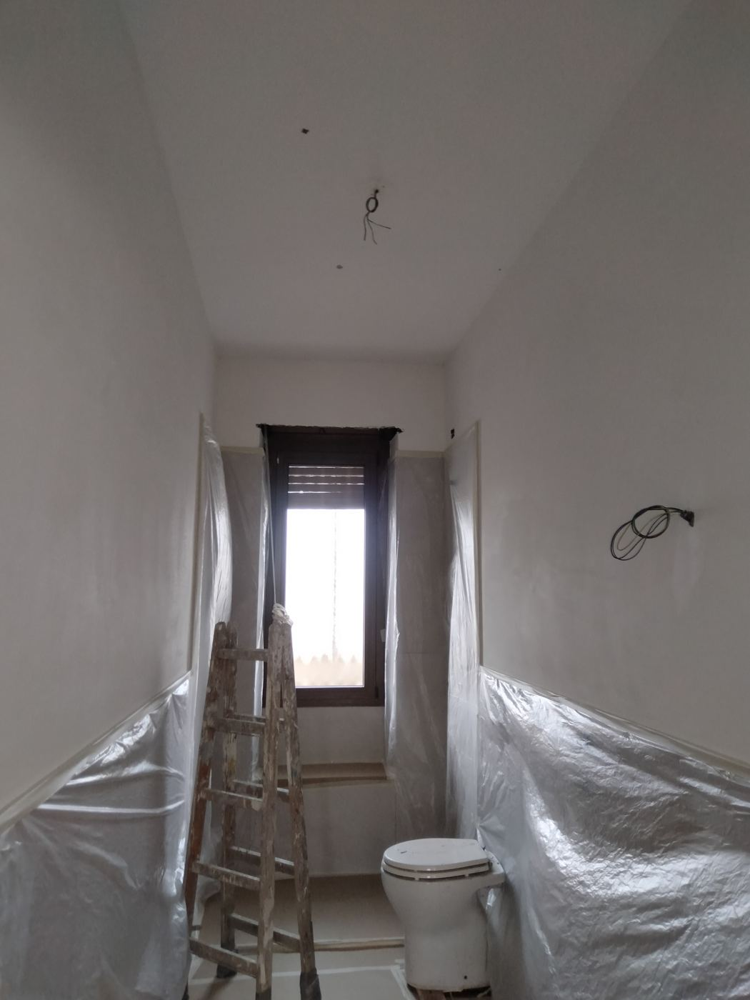
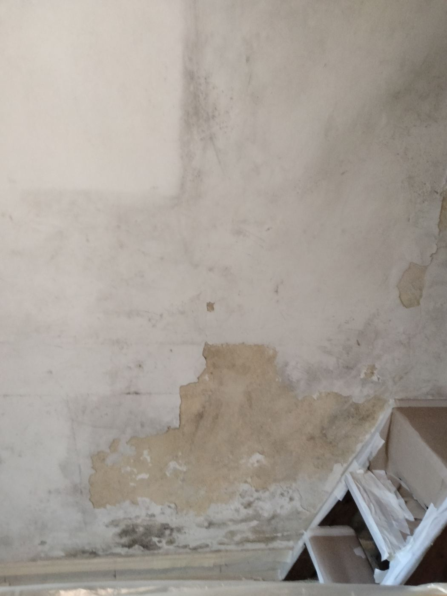

Imbiancatura, stuccatura, cartongesso e pitture decorative per case, uffici e negozi. Materiali di qualità e cura per ogni dettaglio, dalla rasatura all'ultima mano.
Dalla semplice imbiancatura al rinnovo completo di un ambiente: un unico referente, lavori puliti e tempi chiari.
Pareti e soffitti uniformi e puliti, con stuccatura delle imperfezioni prima della pittura.
Pareti lisce e perfettamente in piano, pronte per qualsiasi finitura.
Stucco veneziano, effetto marmo e pietra: le pareti diventano un elemento d'arredo.
Controsoffitti, pareti divisorie e soluzioni su misura per sfruttare al meglio ogni spazio.
Risaniamo le pareti con prodotti specifici prima di pitturare, per un risultato che dura.
Pitture per esterni e restyling di locali commerciali, con un occhio alla valorizzazione degli interni.
Pareti rovinate da umidità e muffa, risanate, rasate e pitturate: il risultato parla da solo.

Prima
Dopo







Per chi vuole qualcosa in più della pittura tradizionale: finiture materiche che cambiano il carattere di una stanza.
Stucco venezianoLucido, profondo, elegante
Effetto marmoVenature realistiche
Finta pietraMaterica, anche per esterni
SpatolatoMovimento e sfumature
Chiamata o WhatsApp, anche solo con qualche foto delle pareti.
Ti diciamo cosa serve, quanto costa e quanto tempo ci vuole.
Proteggiamo pavimenti e mobili e lasciamo tutto in ordine.
Controlliamo insieme il lavoro finito prima di chiudere.
Lavoriamo in tutta Torino e nei comuni della provincia, e ci spostiamo anche fuori Torino.
Sì: lavoriamo a Torino, in tutta la provincia e anche fuori Torino.
Dipende da metri quadri, stato delle pareti e finitura scelta. Mandateci qualche foto su WhatsApp: vi diamo un preventivo chiaro e senza impegno.
Sì, facciamo restyling di negozi, uffici e abitazioni private.
Con un trattamento antimuffa specifico prima della pittura, per un risultato che dura nel tempo.
Il modo più veloce: mandaci su WhatsApp